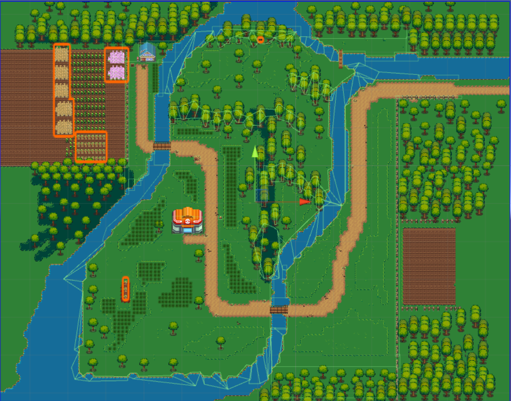
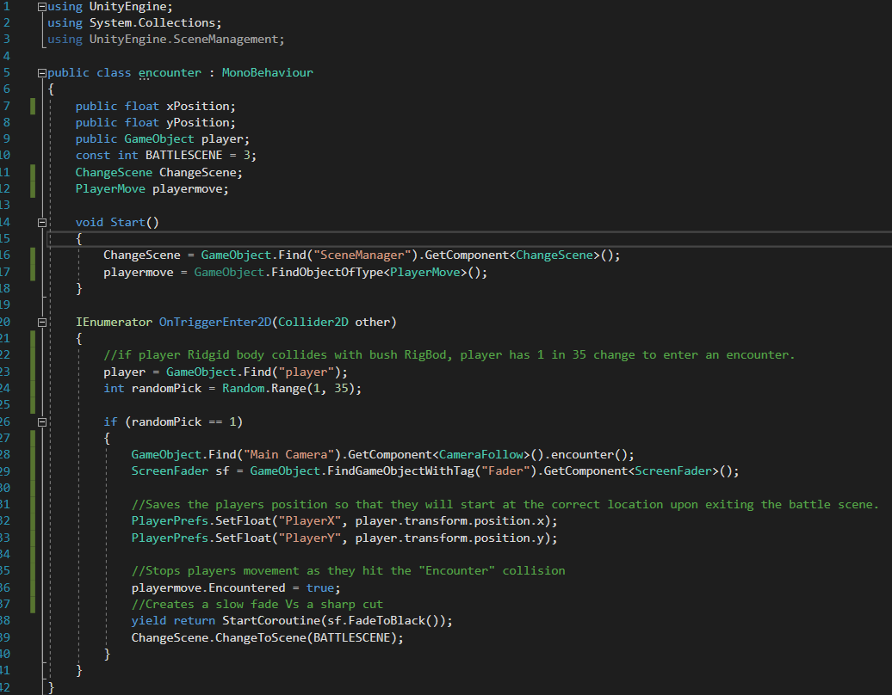
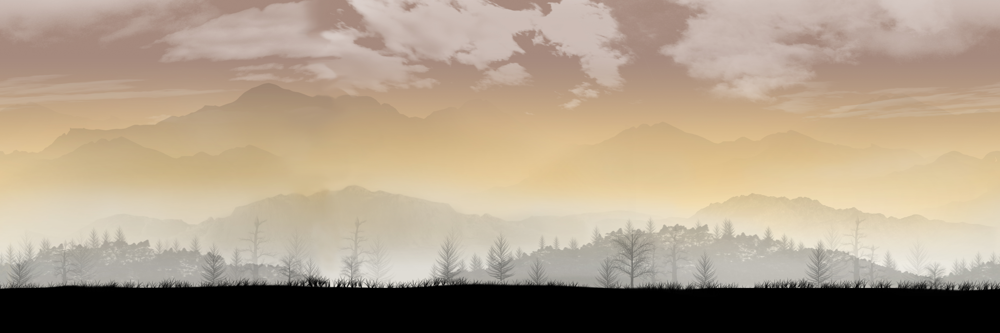
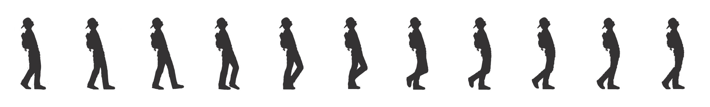
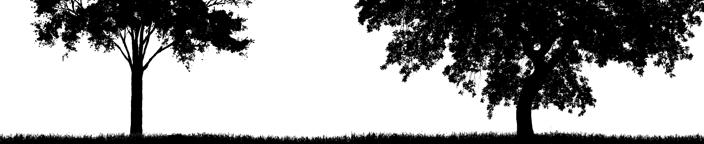
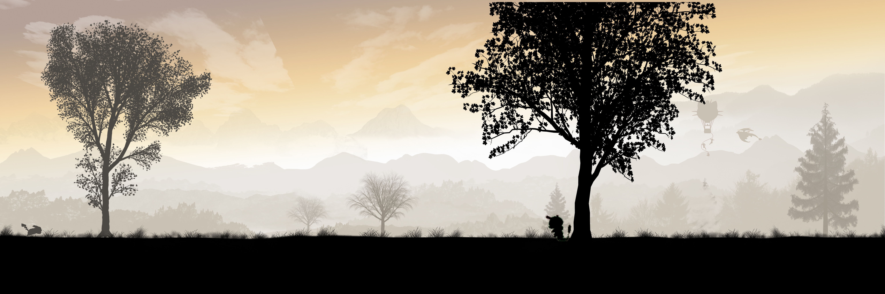
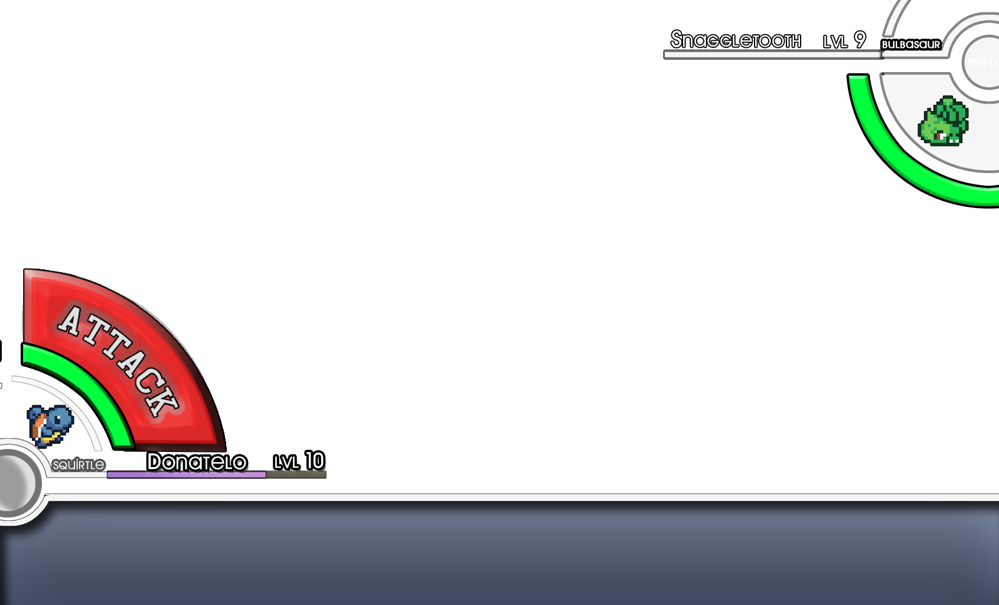

Overview
For this final project I woked on a team of 3 and created a demo Pokemon game with a few variations. While the class was in c++ our instructor encouraged us to follow our interests, so this project was our first time developing in c# and in unity. I created 2 scenes in the project, the OverWorld scene and the Traveling scene. I also created or edited all art assets in the project.
Overworld
The Overworld scene allows the player to explore the world and to enter random battles with wild Pokemon. The Overworld was made with TileMap using simplistic design while encouraging the player to explore each corner of the map. A short gif showing functionality is provided below.

|
|

|
Summary
In this scene I created the map using the open source software: Tiled. I also developed character movement and colliders. I further enabled player/bush collisions to have a 1/35 change to result in a pokemon encounter.
Challanges
Making it possible for the player to re-enter the scene at the same coordiates at which they left proved to be a challenge. Through collaboration we solved this by setting playerPrefs: "PlayerPrefs.SetFloat("PlayerX", player.transform.position.x)" for x and y.
|

|
Travel
The purpose of this scene is meant to be a more event filled fast travel. While the player still has grass filled areas to explore, this travel scene is a chance for a different kind of encounter. These include a rare Pokemon battle, random loot, or even a new path to a secret area. In this scene a button will occasionally pop up prompting the player to "investigate", this button only stays active for a short time.
|
|
Summary
In this scene I created all the art assets in Photoshop. I separated them into three levels:
Background - Trees and hills.
Middleground - Trainer, eevee and ground.
Forground - Falling leaves and moving trees.
|

|
|

|
|

|
|

|
Extra
While creating this game we had many ideas as to how to make the game more fun. One of our stronger game ideas was to treat Pokemon as mercenaries. The idea was that the player would persuade the pokemon to join them through: money, berries or their renown. The contract would have an expiration date, but the player would also get a chance to renew the contract. This idea lead to a relationship point system, where the Pokemon may start to like the trainer and will no longer need a contract at all. This feature got a lot of discussion because we believed it solved some core mechanic issues for the Pokemon series. It gives Pokemon a sense of realism, rather than being thought of as simply property. It also would create a solid foundation for a rich economic system.
UI Plans
I developed several UI Ideas for our Battle scene. Due to time these were never implimented.
|

|
Group
Sara Maemoto
Developed the Intro, Battle, and Hospital scenes as well as the back bone of our code.
Lesley Ding
Developed the win scene.
Resources
I used Tiled for our 2d maps.
We used the Unity engine to develop this game.
We used the Google search engine for everything.